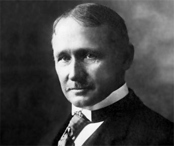

Principales aportes de Frederick Taylor a la Administración

- Fundador de la Administración Científica.
- Aplicación del método científico en la gestión laboral.
- Enfatizó la eficiencia y la productividad.
- Desarrollo del concepto de "hombre estándar".
- División del trabajo y estudio de tiempos y movimientos.
- Implementación de incentivos salariales basados en rendimiento.
Características de la Teoría Clásica de Henry Fayol

Principios de la Administración
- División del trabajo
- Autoridad y responsabilidad
- Disciplina
- Unidad de mando
- Unidad de dirección
- Subordinación del interés individual al general
- Remuneración
- Centralización
- Jerarquía
- Orden
- Equidad
- Estabilidad del personal
- Iniciativa
- Espíritu de equipo
6 funciones básicas de la empresa según Fayol
- Técnicas: Producción de bienes y servicios.
- Comerciales: Compra, venta e intercambio.
- Financieras: Gestión de capitales.
- Seguridad: Protección y preservación de los bienes y personas.
- Contables: Registros financieros y balances.
- Administrativas: Planeación, organización, dirección, coordinación y control.
El proceso administrativo
- Planeación: Determinar objetivos y estrategias.
- Organización: Asignar recursos y definir estructuras.
- Dirección: Liderazgo y comunicación.
- Coordinación: Integración de esfuerzos.
- Control: Evaluación del desempeño.
Aportes de Frank y Lilian Gilbreth

- Estudio del tiempo y movimiento para aumentar la eficiencia.
- Desarrollo de la "therblig", unidad de medida de movimientos manuales.
- Enfoque en la ergonomía y bienestar del trabajador.
- Reducción de la fatiga laboral a través de mejoras en los procesos de trabajo.
- Aplicación de principios científicos en la administración del hogar y la industria.
Impacto e importancia del Enfoque Clásico
- Base para el desarrollo de la administración moderna.
- Introducción de métodos científicos en la gestión empresarial.
- Aplicación de principios que mejoran la eficiencia y productividad.
- Influencia en teorías posteriores como la Administración por Objetivos y la Gestión de la Calidad Total.
- Enfoque estructurado que permite la estandarización y formalización del trabajo.